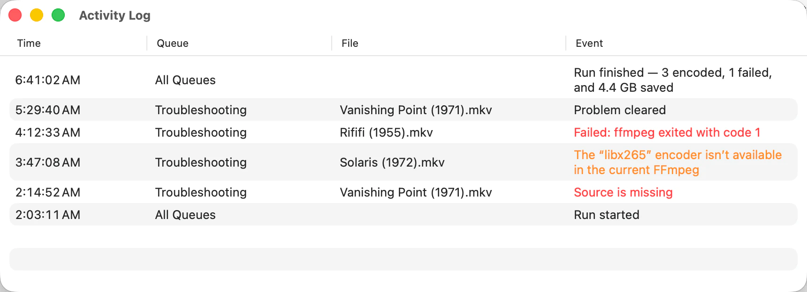

La plupart des fichiers passent de l’ajout à la fin du traitement sans intervention de votre part. Quand ce n’est pas le cas, la raison est presque toujours l’une des trois suivantes : la source n’a pas pu être lue du tout, la source n’est plus là où elle se trouvait ou une exécution a démarré puis a mal tourné.

Toute ligne qui demande votre attention affiche un triangle d’avertissement dans la colonne d’état. Placez le pointeur sur le triangle pour en lire la raison. La ligne sous le nom du fichier dit la même chose, mais elle est tronquée à la largeur de la colonne, et un message de FFmpeg est souvent plus long. Si elle est coupée, placez le pointeur dessus ou ouvrez le Journal d’activité.
Un triangle peut aussi signifier que le FFmpeg que vous utilisez n’a pas d’encodeur pour un codec choisi comme codec cible. Dans ce cas, le codec est nommé, et la solution se trouve dans Si un codec ne peut pas être encodé.
Choisissez Fenêtre ▸ Journal d’activité (⇧⌘L).
Le journal retrace ce qui s’est passé, du plus récent au plus ancien, pour toutes les files d’attente à la fois : l’heure, la file d’attente, le fichier et ce qui lui est arrivé. Il sert surtout à une chose : c’est là que se trouve le texte complet de l’erreur, sans troncature. Dans la file d’attente, chaque fichier ne dispose que d’une courte ligne ; le journal contient le message en entier.

Il est conçu pour être lu le lendemain matin d’une exécution laissée en cours. Chaque exécution écrit une ligne à son démarrage et une autre à son arrêt, qui indique son bilan, et entre les deux figure tout ce qui s’est mal passé : un fichier en échec, une source disparue, un transcodage que ce FFmpeg ne peut pas effectuer, un problème résolu depuis.
Un fichier traité sans problème n’apparaît pas du tout dans le journal. L’analyse, l’encodage et la fin du traitement n’écrivent rien – la ligne de clôture donne les totaux – si bien qu’une exécution sans incident sur trois cents fichiers tient en deux lignes plutôt qu’en six cents, et que tout ce que vous voyez mérite d’être lu. Une exécution sans problème indique Rien à signaler.
Aucun message n’est abrégé ici. Chaque entrée s’agrandit pour contenir tout ce qu’elle a à dire, et le texte peut être sélectionné et copié. Seuls les horodatages sont abrégés : ceux d’aujourd’hui n’indiquent que l’heure, les plus anciens indiquent aussi la date.
Le journal couvre la session en cours de SubTrack. Quitter l’app le vide, car il sert à rendre compte de la session qui a effectué l’encodage.
Si le message ne correspond à rien de ce que cette page décrit, cela mérite d’être signalé : copiez-le depuis le journal et signalez un problème sur GitHub.
Le reste de cette page porte sur des problèmes propres à un fichier. Celui-ci ne concerne aucun fichier en particulier : « Enregistrement impossible » à droite de la barre d’état signifie que SubTrack ne parvient pas à enregistrer la file d’attente elle-même. Ce que vous voyez à l’écran est correct ; ce qui est stocké sur le disque ne suit plus.
Ce message n’apparaît que tant que le problème dure et disparaît dès qu’un enregistrement réussit à nouveau : un disque brièvement occupé ne laisse donc aucune trace. Cliquez dessus pour ouvrir le Journal d’activité, où la raison complète figure sur une ligne distincte, marquée Toutes les files d’attente parce que, contrairement à la plupart des entrées, elle ne concerne pas un seul fichier. Le journal conserve aussi l’heure de début et écrit une autre ligne lorsque l’enregistrement reprend : un incident survenu et résolu pendant votre absence laisse ainsi une trace de son début et de sa fin.
Aucun bouton ne règle ce problème, et c’est précisément pourquoi SubTrack vous prévient au lieu d’attendre. Tant que le message est affiché, tout ce que vous ajoutez ou modifiez risque d’être perdu lorsque vous quitterez l’app. Vérifiez que le disque qui contient votre dossier de départ n’est pas plein, et notez ce que vous préféreriez ne pas avoir à reconfigurer.